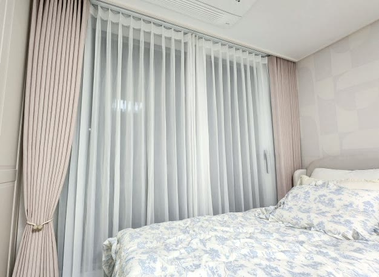
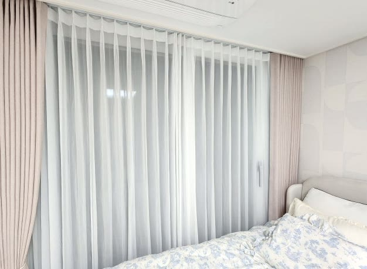
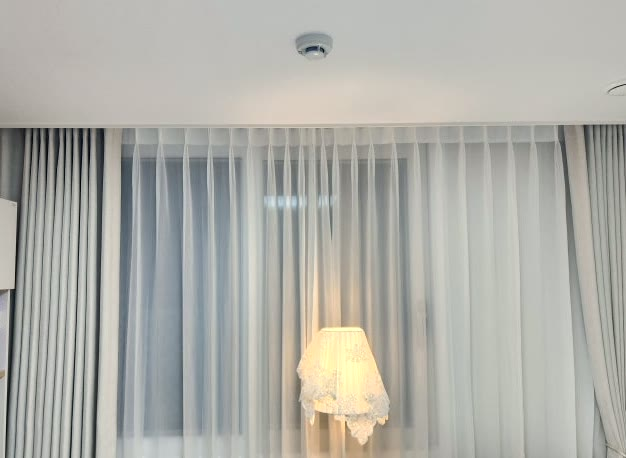

2026년 6월 27일 시공
안동 옥동 아파트 거실·안방
2중커튼 시공후기

안동 옥동의 신축 아파트에 다녀왔습니다.
거실과 안방 창을 한 번에 맞추는 신축 입주 세팅이었습니다.
고객님은 낮에는 은은한 채광을 살리되 바깥 시선은 가리고, 밤이나 햇빛이 강할 때는 빛을 확실히 막고 싶어 하셨습니다.
여기에 더해 거실과 안방의 분위기를 다르게 — 거실은 모던하게, 안방은 포근하게 — 연출하고 싶다는 요청이었습니다.
신축 입주, 거실과 안방을 한 번에
신축 입주는 커튼을 방마다 따로 맞추기보다, 전체를 한 번에 세팅하는 편이 훨씬 정돈됩니다.
레일과 봉의 높이, 주름 방향, 바닥선까지 집 전체의 기준을 통일할 수 있기 때문입니다.
이 댁도 거실과 안방을 같은 구성으로 잡되, 방의 쓰임에 맞춰 컬러만 달리하기로 했습니다.
왜 2중 커튼인가
이 조건에는 쉬폰과 암막을 함께 거는 2중 커튼 구성이 가장 잘 맞습니다.
안쪽 쉬폰만 치면 빛이 부드럽게 들어오면서 바깥 시선은 가려져, 낮 동안 환하면서도 프라이버시가 지켜집니다.
해가 강하거나 밤에 빛을 완전히 막고 싶을 땐 바깥 암막까지 같이 치면 됩니다.
한 창에서 채광과 차광을 모두 조절할 수 있어, 거실과 침실 모두에 실용적인 구성입니다.

거실은 백아이보리로 깔끔하고 모던하게
거실은 가족이 함께 쓰고 손님도 오는 공간이라, 어느 인테리어에나 무난하게 어울리는 백아이보리 암막으로 잡았습니다.
화이트보다 살짝 따뜻한 아이보리 톤이라 차갑지 않으면서도 깔끔하고 모던한 느낌을 줍니다.
벽지와 바닥의 밝은 톤과 자연스럽게 이어져, 거실이 한층 넓고 정돈돼 보입니다.
안방은 인디언핑크로 따뜻하고 포근하게
안방은 무엇보다 잘 쉬고 잘 주무셔야 하는 공간입니다.
그래서 암막으로 햇빛을 확실히 차단해 숙면을 돕되, 컬러는 인디언핑크로 골라 따뜻한 무드를 더했습니다.
짙은 핑크빛 암막이 침구·벽지 톤과 어우러져, 방에 들어서면 아늑하게 감싸이는 느낌을 줍니다.
차광은 챙기면서 분위기는 포근하게 — 침실에 딱 맞는 조합입니다.

나비주름 시공과 관리
두 공간 모두 나비주름으로 잡아 주름이 일정하고 풍성하게 떨어지도록 했습니다.
나비주름은 볼륨감이 살아 있어 같은 원단이라도 한결 고급스럽게 보입니다.
창 길이에 맞춰 레일을 잡고 주름 폭을 넉넉히 두었으며, 바닥선에 맞춰 길이를 정리해 끌리거나 뜨지 않게 마감했습니다.
평소 먼지를 가볍게 털어 주시고 오염이 있을 때 부분 세탁하시면, 풍성한 라인을 오래 깨끗하게 쓰실 수 있습니다.

같은 2중 커튼 구성이라도 암막 컬러 하나로 방의 무드가 완전히 달라집니다.
거실은 백아이보리로 깔끔하게, 안방은 인디언핑크로 포근하게 — 채광·차광·시선 차단이라는 기능은 똑같이 챙기면서 방마다 어울리는 분위기를 입혀 드렸습니다.
안동을 포함한 대구·경북 전 지역, 신축 입주 커튼 세팅이 고민되시면 편하게 문의 주세요.